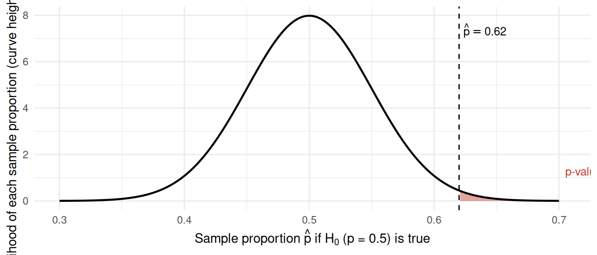

Module 4 — Read 0
Project preview — Project 4 — Designing Fair Comparisons
Module 4, Read 0: Why fair comparisons are hard
Project: Project 4, Designing Fair Comparisons · Next: Read 1
The central question of Module 4
Many interesting question in science and public policy involves comparing two groups:
- Does this drug work better than a placebo?
- Does a tutoring program raise test scores?
- Are workers in remote roles more productive than in-office workers?
These questions look straightforward but finding high quality evidence to answer them is not easy and sometimes not possible.
What you will do in Project 4
Project 4 assigns you a research question from another STAT 109 student (remember that activity back in Module 0?) about a two-group comparison. You will:
- Classify the design, Is it an RCT or an observational study? Who decides group membership?
- Identify confounders, Draw a simple DAG showing how a confounder might explain an observed difference between groups.
- Simulate a dataset, Use
set.seed()to create a reproducible, fictional dataset that mirrors the design. - Choose the right test to calculate a p-value, Pick from the methods table by variable types (numerical response→ Welch t; binary response → two-proportion z or \(\chi^2\) test).
- Write down a feasible plan for your classmate. Summarize your findings in one page for collecting, analyzing and making a conclusion based on data.
Module 4 learning path
| Step | Material |
|---|---|
| Read 0 (this page) | Project preview, what makes comparisons fair |
| Read 1 | Three sections: study design & confounding · two-group tests/CIs · more than two groups |
| Quiz A | Study-design vocabulary + two-group methods & output reading |
| Demo Lab 1 | Simulate data by study design; compare groups with Module 3 plots/stats |
| Demo Lab 2 | Inference for two groups, paired groups, and more than two groups |
| Exercise lab | Practice problems based on demo labs |
| Synthesis quiz | Both R code from labs and concepts from Read 1 |
| Milestone 4 | Optional worksheet |
| Project 4 | One page report + reproducible notebook |
Connecting to tools you already have
Module 4 reuses ideas you built earlier, so before proceeding, let’s review the four that matter most.
The p-value (Module 1 and Project 1)
Recall the way we came to understand a p-value: it is a one-number summary of how surprising your data would be if the null hypothesis were true. More precisely, it is the probability of getting data at least as extreme as what you actually observed, assuming the null is correct. A two-group comparison just applies this same idea to a difference between groups.
Null, alternative, and the sampling distribution
Every test starts with a null hypothesis (\(H_0\)) and an alternative (\(H_a\)). Take a concrete example: a redesign is said to be preferred by more than half of users, so we test \(H_0: p = 0.5\) against the one-sided alternative \(H_a: p > 0.5\). If the null were true, the sample proportion \(\hat{p}\) would still bounce around from sample to sample according to its sampling distribution, centered at \(0.5\). The p-value is the area in the tail past your observed value: the dashed line below marks the observed \(\hat{p}\), and the shaded area to its right (values at least as large as \(\hat{p}\)) is the p-value.
Decisions and the two ways to be wrong
A small p-value means the observed data sit far out in the tails, far from what the null predicts, so we reject the null. A large p-value means the data are consistent with the null, so we do not reject it. Two errors are possible:
- A Type I error is rejecting the null when it is actually true (a false alarm). You control its rate directly by your cutoff, the significance level (e.g. \(\alpha = 0.05\)).
- A Type II error is failing to reject the null when it is actually false (a missed effect). You reduce it mainly with a larger sample size.
Choosing the method (Module 3)
To decide which test computes the p-value, do exactly what you did in Module 3: make the bivariate plot and summary, then count and classify the variables (numerical or categorical). The number and type of variables point you to the right row of the methods table. Don’t forget to check the conditions before using a test.
Testing a plan by simulation (Modules 0 and 1)
Before any real data exist, you can test your analysis plan on simulated data. This is the same simulation toolkit you used to estimate probabilities in Modules 0 and 1 (set.seed(), sample(), rbinom(), rnorm()): build a fictional dataset where you already know the truth, then confirm your chosen method behaves the way you expect.
Quick vocabulary preview
| Term | Plain language |
|---|---|
| Explanatory variable (EV) | The group label; the “’cause” you are interested in finding the effect of, e.g. treatment (drug or placebo). |
| Response variable (RV) | The outcome/effect you measure |
| RCT | Researcher flips a coin to assign groups, gold standard for high quality evidence |
| Observational study | Groups form on their own, low quality evidence, but often the only feasible design |
| Confounder | A third variable that prevents a direct comparison of the response variable between the groups of the explanatory variable. |
| DAG | A picture of assumed causal paths between variables |
A quick confounding example: library visits and GPA
Question: Does going to the library increase GPA?
- Explanatory variable (\(A\)): visits the library (yes/no).
- Response variable (\(Y\)): GPA (number).
- Confounder: academic motivation.
Code
flowchart LR
M[Academic motivation]
A[Visits library]
Y[GPA]
M --> A
M --> Y
A --> Yflowchart LR M[Academic motivation] A[Visits library] Y[GPA] M --> A M --> Y A --> Y
Motivation is a confounder of the relationship between vising the library ($A$) and GPA ($Y$) : more motivated students both go to the library more and earn higher GPAs, so motivation feeds the two arrows that point into \(A\) and \(Y\). That shared cause can make library visits look helpful even if sitting in the library changes nothing. To get a fairer comparison you would compare GPAs between library-goers and non-goers within the same motivation level (subclassification), or randomly assign library visits so motivation is balanced across groups.
Note
Reuse
Creative Commons Attribution-NonCommercial 4.0 International(View License)